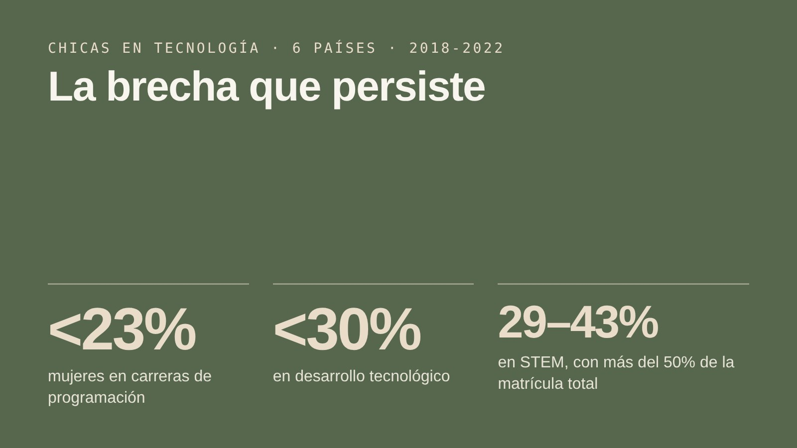
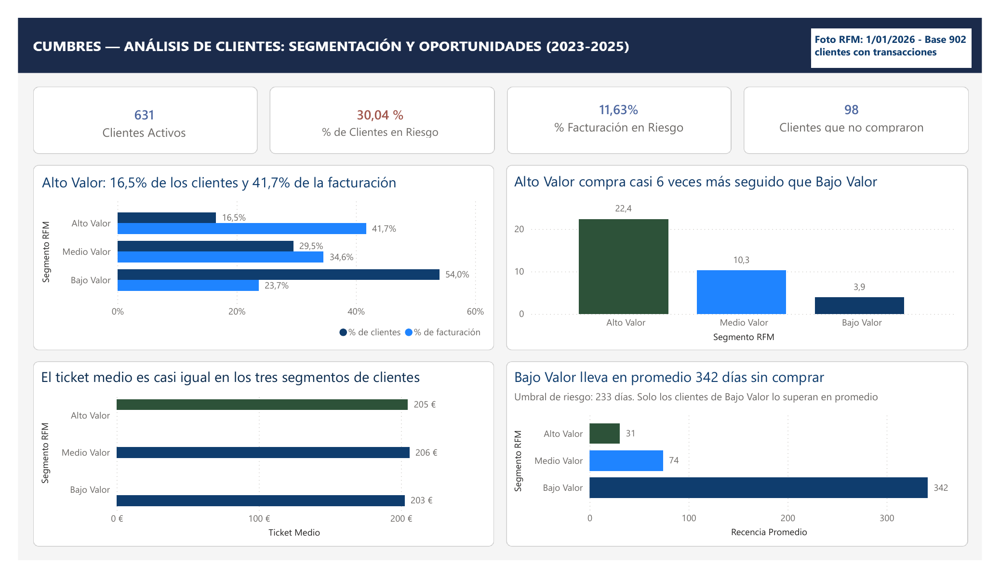
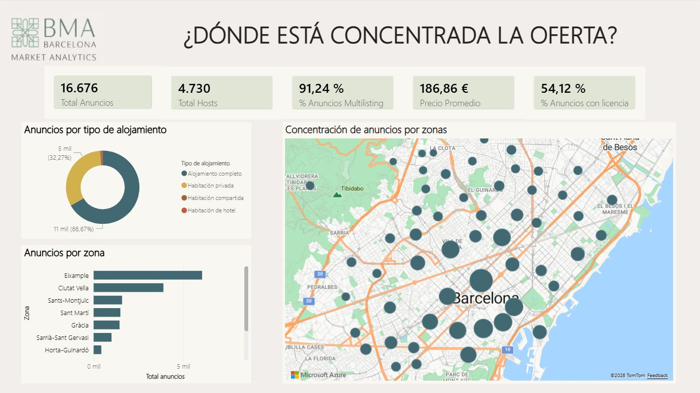

Experiencia de negocio real
Más de 8 años en áreas comerciales y operativas (Retail & B2B). Conozco las preguntas que se hace un equipo de ventas antes de abrir un dashboard.
Analista de datos
Convierto datos de clientes y ventas en decisiones comerciales.
Soy socióloga, trabajé años del lado del negocio y hoy analizo datos: sé de dónde sale un dato y para qué lo necesita quien tiene que decidir.
Vengo de la investigación social: coordiné un equipo de 6 encuestadores en el Censo Nacional 2022 (INDEC), diseñé y analicé las encuestas nacionales de talles de AnyBody Argentina y desarrollé 6 informes del estudio La brecha que persiste de Chicas en Tecnología, en remoto desde Mar del Plata.
Del lado del negocio, trabajé en áreas comerciales y operativas de retail y distribución B2B, entre ellas Open Sports, donde conocí desde adentro cómo colaboran las áreas de una empresa grande.
Me formé en Data Analytics en Unicorn Academy y trabajo con Python, SQL, Power BI y Excel, desde la limpieza de datos hasta el informe para quien decide.
Busco roles en Data Analytics, BI, Customer Analytics y análisis comercial, remotos o presenciales/híbridos en Mar del Plata.
Lo que sumo además de las herramientas.
Más de 8 años en áreas comerciales y operativas (Retail & B2B). Conozco las preguntas que se hace un equipo de ventas antes de abrir un dashboard.
Vengo de la sociología: pregunto cómo se construyó el dato antes de medirlo y digo qué no puede responder. En Cumbres dejé explícito que "cliente en riesgo" es un criterio para priorizar contactos, no una predicción de abandono.
Cada análisis termina en una recomendación concreta y en un informe que entiende alguien que no es técnico. En Cumbres hice un informe técnico y otro de negocio para dirección.

Datos públicos · 6 países · Publicado
Desarrollé 6 informes analíticos, uno por país, sobre la participación de las mujeres en carreras universitarias de tecnología en América Latina (2018-2022). En cada uno, las estadísticas se leen a la luz del sistema educativo del país, lo que permite explicar por qué los resultados difieren. El estudio incluye además un informe regional.
Pregunta de investigación¿Cuántas mujeres faltan para alcanzar la paridad de género en las carreras de tecnología?
Hallazgo claveEn programación, las mujeres no superan el 23% en ningún país, aunque son más del 50% de la matrícula universitaria.
Los 7 informes Regional · Argentina · Chile · Colombia · México · Perú · Uruguay
Ver el estudio
Datos sintéticos · ERP y CRM
Análisis de la cartera de clientes de un retailer deportivo, a partir de registros que simulan un ERP y un CRM, período 2023-2025.
Pregunta de negocio¿Cómo se distribuye el valor de la cartera de clientes y a qué clientes inactivos conviene contactar primero?
Hallazgo clave81 de los 271 clientes en riesgo concentran el 62,9% de la facturación histórica en riesgo.
Ver proyecto
Datos públicos reales · Proyecto en equipo
Proyecto integrador del bootcamp de Unicorn Academy, en equipo, con datos públicos reales que Inside Airbnb obtiene por web scraping (septiembre de 2025).
Pregunta de negocio¿Cuál es la dimensión y la composición del mercado de Airbnb en Barcelona en volumen, precios, tipo de alojamiento y cumplimiento de licencias?
Hallazgo claveEl 91,2% de los anuncios es de hosts con más de un anuncio, y el 59,6% está en Eixample y Ciutat Vella.
Ver proyectoAnálisis de datos en investigación social y de mercado.
Ediciones 2022 y 2024: construcción de la encuesta y análisis de los resultados sobre las dificultades de acceso a la diversidad de talles en indumentaria y calzado en Argentina.
Ver encuestas →Acceso de las mujeres a puestos de decisión en Argentina, con microdatos de la EPH (INDEC) de 2016 y 2020. Avance presentado en las XIV Jornadas de Sociología (UBA, 2021).
Ver ponencia (PDF) →La mejor forma de contactarme es por LinkedIn, donde también está mi CV completo.